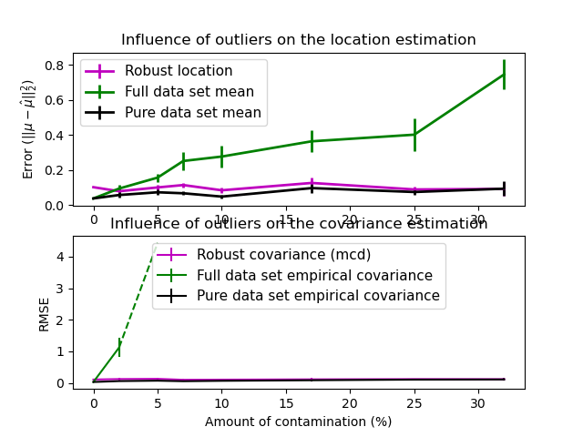

Note
Click here to download the full example code or to run this example in your browser via Binder
Robust vs Empirical covariance estimate¶
The usual covariance maximum likelihood estimate is very sensitive to the presence of outliers in the data set. In such a case, it would be better to use a robust estimator of covariance to guarantee that the estimation is resistant to “erroneous” observations in the data set. [1], [2]
Minimum Covariance Determinant Estimator¶
The Minimum Covariance Determinant estimator is a robust, high-breakdown point (i.e. it can be used to estimate the covariance matrix of highly contaminated datasets, up to \(\frac{n_\text{samples} - n_\text{features}-1}{2}\) outliers) estimator of covariance. The idea is to find \(\frac{n_\text{samples} + n_\text{features}+1}{2}\) observations whose empirical covariance has the smallest determinant, yielding a “pure” subset of observations from which to compute standards estimates of location and covariance. After a correction step aiming at compensating the fact that the estimates were learned from only a portion of the initial data, we end up with robust estimates of the data set location and covariance.
The Minimum Covariance Determinant estimator (MCD) has been introduced by P.J.Rousseuw in [3].
Evaluation¶
In this example, we compare the estimation errors that are made when using various types of location and covariance estimates on contaminated Gaussian distributed data sets:
The mean and the empirical covariance of the full dataset, which break down as soon as there are outliers in the data set
The robust MCD, that has a low error provided \(n_\text{samples} > 5n_\text{features}\)
The mean and the empirical covariance of the observations that are known to be good ones. This can be considered as a “perfect” MCD estimation, so one can trust our implementation by comparing to this case.
References¶
import numpy as np
import matplotlib.pyplot as plt
import matplotlib.font_manager
from sklearn.covariance import EmpiricalCovariance, MinCovDet
# example settings
n_samples = 80
n_features = 5
repeat = 10
range_n_outliers = np.concatenate(
(
np.linspace(0, n_samples / 8, 5),
np.linspace(n_samples / 8, n_samples / 2, 5)[1:-1],
)
).astype(int)
# definition of arrays to store results
err_loc_mcd = np.zeros((range_n_outliers.size, repeat))
err_cov_mcd = np.zeros((range_n_outliers.size, repeat))
err_loc_emp_full = np.zeros((range_n_outliers.size, repeat))
err_cov_emp_full = np.zeros((range_n_outliers.size, repeat))
err_loc_emp_pure = np.zeros((range_n_outliers.size, repeat))
err_cov_emp_pure = np.zeros((range_n_outliers.size, repeat))
# computation
for i, n_outliers in enumerate(range_n_outliers):
for j in range(repeat):
rng = np.random.RandomState(i * j)
# generate data
X = rng.randn(n_samples, n_features)
# add some outliers
outliers_index = rng.permutation(n_samples)[:n_outliers]
outliers_offset = 10.0 * (
np.random.randint(2, size=(n_outliers, n_features)) - 0.5
)
X[outliers_index] += outliers_offset
inliers_mask = np.ones(n_samples).astype(bool)
inliers_mask[outliers_index] = False
# fit a Minimum Covariance Determinant (MCD) robust estimator to data
mcd = MinCovDet().fit(X)
# compare raw robust estimates with the true location and covariance
err_loc_mcd[i, j] = np.sum(mcd.location_**2)
err_cov_mcd[i, j] = mcd.error_norm(np.eye(n_features))
# compare estimators learned from the full data set with true
# parameters
err_loc_emp_full[i, j] = np.sum(X.mean(0) ** 2)
err_cov_emp_full[i, j] = (
EmpiricalCovariance().fit(X).error_norm(np.eye(n_features))
)
# compare with an empirical covariance learned from a pure data set
# (i.e. "perfect" mcd)
pure_X = X[inliers_mask]
pure_location = pure_X.mean(0)
pure_emp_cov = EmpiricalCovariance().fit(pure_X)
err_loc_emp_pure[i, j] = np.sum(pure_location**2)
err_cov_emp_pure[i, j] = pure_emp_cov.error_norm(np.eye(n_features))
# Display results
font_prop = matplotlib.font_manager.FontProperties(size=11)
plt.subplot(2, 1, 1)
lw = 2
plt.errorbar(
range_n_outliers,
err_loc_mcd.mean(1),
yerr=err_loc_mcd.std(1) / np.sqrt(repeat),
label="Robust location",
lw=lw,
color="m",
)
plt.errorbar(
range_n_outliers,
err_loc_emp_full.mean(1),
yerr=err_loc_emp_full.std(1) / np.sqrt(repeat),
label="Full data set mean",
lw=lw,
color="green",
)
plt.errorbar(
range_n_outliers,
err_loc_emp_pure.mean(1),
yerr=err_loc_emp_pure.std(1) / np.sqrt(repeat),
label="Pure data set mean",
lw=lw,
color="black",
)
plt.title("Influence of outliers on the location estimation")
plt.ylabel(r"Error ($||\mu - \hat{\mu}||_2^2$)")
plt.legend(loc="upper left", prop=font_prop)
plt.subplot(2, 1, 2)
x_size = range_n_outliers.size
plt.errorbar(
range_n_outliers,
err_cov_mcd.mean(1),
yerr=err_cov_mcd.std(1),
label="Robust covariance (mcd)",
color="m",
)
plt.errorbar(
range_n_outliers[: (x_size // 5 + 1)],
err_cov_emp_full.mean(1)[: (x_size // 5 + 1)],
yerr=err_cov_emp_full.std(1)[: (x_size // 5 + 1)],
label="Full data set empirical covariance",
color="green",
)
plt.plot(
range_n_outliers[(x_size // 5) : (x_size // 2 - 1)],
err_cov_emp_full.mean(1)[(x_size // 5) : (x_size // 2 - 1)],
color="green",
ls="--",
)
plt.errorbar(
range_n_outliers,
err_cov_emp_pure.mean(1),
yerr=err_cov_emp_pure.std(1),
label="Pure data set empirical covariance",
color="black",
)
plt.title("Influence of outliers on the covariance estimation")
plt.xlabel("Amount of contamination (%)")
plt.ylabel("RMSE")
plt.legend(loc="upper center", prop=font_prop)
plt.show()
Total running time of the script: ( 0 minutes 2.682 seconds)